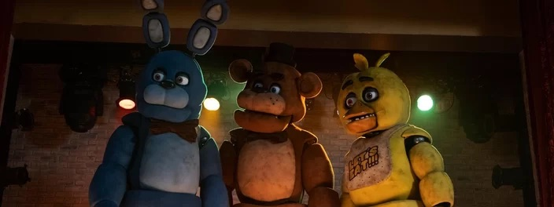

Five Nights at Freddy's - O Pesadelo Sem Fim tem cena pós-créditos?

Nesta quinta-feira (26) estreou no Brasil um dos filmes de terror mais aguardados de 2023. Five Nights at Freddy's - O Pesadelo Sem Fim está entre nós! Dirigida por Emma Tammi, a obra é baseada na franquia de jogos de videogame homônima, criada por Scott Cawthon. A série de games teve início em 2014 e segue ativa até os dias atuais, com o último título, chamado Five Nights at Freddy's: Security Breach, lançado em 2021.
A trama de Five Nights at Freddy's - O Pesadelo Sem Fim é quase idêntica àquela vista nos jogos eletrônicos. "Mike Schmidt é um jovem contratado para trabalhar como o vigia noturno do antigo restaurante familiar Freddy Fazbear's Pizza, um lugar famoso por seus característicos robôs anatômicos que, quando chega a noite, se transformam em assassinos", revela a sinopse do longa-metragem arrepiante.
Com o lançamento de Five Nights at Freddy's - O Pesadelo Sem Fim, muitos fãs da franquia têm se perguntado se o filme de terror traz cenas pós-créditos. Se sim, o que acontece nelas? Abaixo, veja as respostas!
Five Nights at Freddy's - O Pesadelo Sem Fim tem cenas pós-créditos?
Sem rodeios, sim, Five Nights at Freddy's - O Pesadelo Sem Fim tem uma cena pós-créditos. Na sequência em questão, o filme, de maneira geral, faz uma homenagem à grande e leal comunidade de fãs que surgiu em torno dos jogos de videogame ao longo do tempo, agradecendo-a por todo o apoio.
Na cena pós-créditos, vemos novamente o motorista de táxi que havia aparecido anteriormente no longa levando os animatrônicos em seu veículo.
Ele acorda de um cochilo inocente que tirou do lado de fora do restaurante e dá de cara com Balloon Boy, aquele animatrônico menor (mas igualmente assustador) que, nos games, costuma se esconder em locais inesperados para assustar os desavisados, que geralmente estão preocupados com os animatrônicos maiores.
Outro ponto importante da cena é que o taxista é interpretado por Cory Kenshin (CoryxKenshin), um famoso youtuber. Inclusive, Five Nights at Freddy's - O Pesadelo Sem Fim tem participações de outros criadores de conteúdo do YouTube. O que nada mais é do que uma forma de homenagear os produtores de vídeos que, no início dos jogos de Five Nights at Freddy's, popularizaram a franquia na internet fazendo reacts e gameplays, por exemplo.
Ou seja, a cena não prepara os fãs para um novo filme, mas, sim, honra aquelas figuras que sempre amaram e ajudaram Five Nights at Freddy's ao longo dos anos.